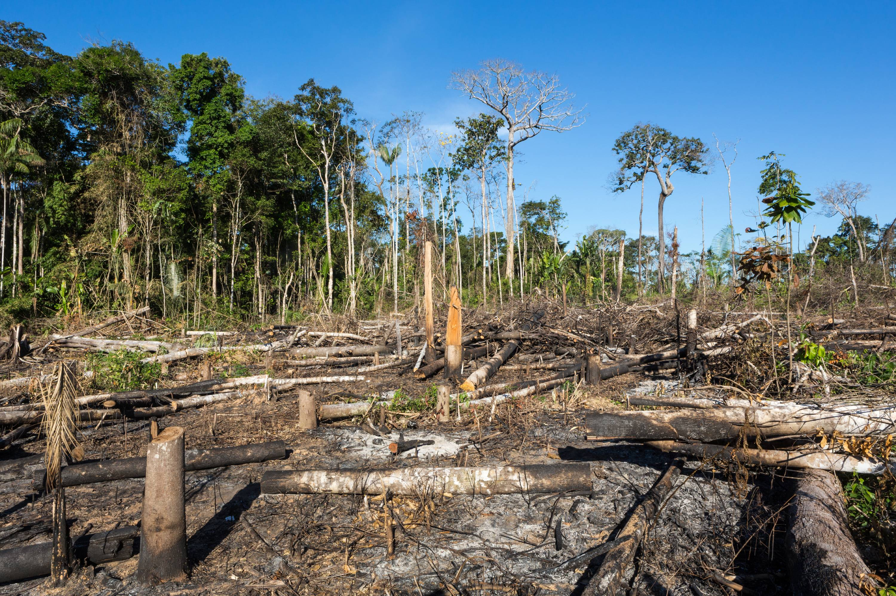

Places to Visit

Bermuda: Pink Sand Beaches
Visited during June 2019
From intimate cottage colonies to historic oceanfront resorts, Bermuda has plenty of gorgeous options for booking your stay. Instead of a cookie-cutter hotel room, feast your eyes on a cliffside residential enclave overlooking South Shore. Or, take your pod to a private vacation rental close enough to the water to hear the waves splashing. Traveling safely and responsibly is top-of-mind after 2020’s tumultuous days. Bermuda is the perfect destination to visit with your favorite pod — and there are plenty of safety guidelines set in place. Before you go, take a look at the island’s Covid-19 protocols and guidelines. Fill out the easy Travel Authorization Process form and follow the pre-arrival Covid-19 PCR test protocols. Start planning so you can be on island time in practically no time.

Universal Studios, Orlando, Florida
Visited Winter-Spring 2019
If you haven’t visited the Universal Orlando Resort recently, you’re missing out on so much more than just another theme park. Since opening back in 1990, Universal Orlando has gone from just a single park – to multiple parks, hotels, and an entertainment complex. It’s filled with great food, family fun, and of course, amazing rides. And there’s no end in sight to Universal’s incredible growth. Every year new attractions and hotels are still being added, cementing it as one of the best travel destinations in the world!
Books
Anna Quindlen
In books I have traveled, not only to other worlds, but into my own.
Here is a list of must-read books for people who love to read as much as I do!
Stone Fox
by John Reynolds Gardener
A Series of Unfortunate Events
by Lemony Snicket
Fablehaven
by Brandon Mull

Home of the Brave
by Katherine Applegate
Home of the Brave by Katherine Applegate
Home of the Brave is a 2008 juvenile novel by Katherine Applegate that is written entirely in free verse. The story revolves around the protagonist, a young boy named Kek, who has fled from violence and upheaval in his native Sudan and traveled alone to the United States. Kek’s father and older brother were killed in an attack on their camp, and Kek was forced to leave his mother behind to save his own life. He tries to assimilate into American culture while waiting for word about his mother. Along the way, he learns the English language, embraces school wholeheartedly, and becomes friends with an eclectic group, including a girl in foster care, an old farmwoman, and her cow. Above all, Kek’s boundless capacity for hope stands out as a beacon of inspiration for his friends and family.
Free PDF link to read
News on the Environment
-
Lego plans to find replacement materials for bricks by 2030

In an effort to be more environmentally responsible, the LEGO company has said that they are aiming to stop manufacturing bricks that are made of plastic resin and are considering other options, whoch could include hemp. According to The Telegraph World, the company makes 60 million blocks a year! While LEGO wants to replace the harmful plastic used in their products, they also require the new material to meet the high standards that allow the blocks to work as they always have, especially with the "clicking" together as a key aspect of the iconic colored block.
-
Amazon deforestation and number of fires show Summer 2019 to not be 'normal'
The percieved scale ot the Amazon blazes recieved global attention during the summer of 2019. However, international concerns raised at the time were countered by the Brazilian government, which claimed that the fire situation in August was 'normal' and 'below the historical average'. an international team of scientists writing in the journal Global Change Biology say the number of active fires in August was actually three times higher than 2018 and the highest number since 2019!
Movie Reviews

Beautiful, original story about handling big feelings.
Story Line:
When baby Riley is born to her loving parents, so is her first emotion - Joy, who's soon joined by Sadness, Anger, Fear, and Disgust in INSIDE OUT. The quintet live and work in Headquarters, the part of Riley's brain that experiences feelings and makes memories. With Joy as their leader, the group helps their girl through toddlerhood (ick, broccoli!) and childhood (hooray, a hockey goal!). But everything changes when 11-year-old Riley and her parents move from Minnesota to San Francisco after her dad gets a new job. As Riley tries to cope with a new house, a new school, and her parents' increased stress, things get out of control back at HQ: Sadness and Joy tussle over Riley's core memories and end up getting sucked into long-term storage. Can they make it back to HQ in time to help Riley get back in touch with all of her feelings?

A heartwarming tale about a girl and a dog
Story Line:
Opal and her worried, distracted preacher father have just moved to tiny Naomi, Florida. At the grocery store, Opal meets a troublemaking stray dog causing chaos, claims him as hers, and names him Winn-Dixie after the store. Her dad and the landlord say "No!" But Winn-Dixie wants to stay with Opal and help her make some new friends. Soon, Opal has a job working the pet store and befriends the town librarian (Eva Marie Saint), a reclusive woman (Cecily Tyson), and some local kids. As Opal becomes more confident, she finds the courage to ask the Preacher about her mother. Because of Winn-Dixie, she has developed the maturity to begin to understand the answers. And because of Winn-Dixie, the small town of Naomi becomes once again a place where people know each other's sorrows and reach out to each other.
Contact Us
You can contact me at
amazing10mt@gmail.com
I am also a coder at Whitehat Jr, so you can reach out to me that way too!